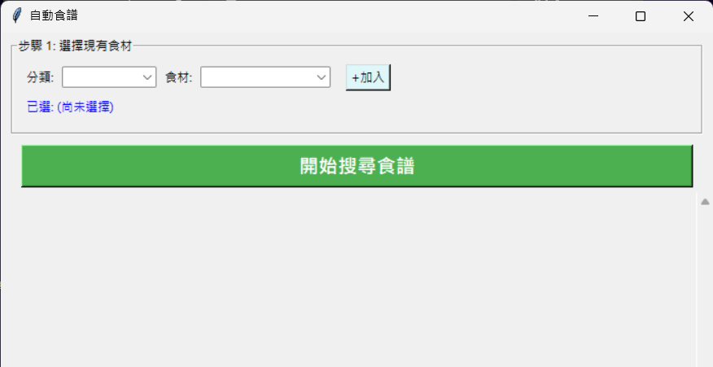
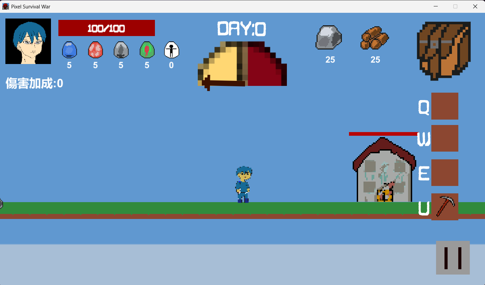
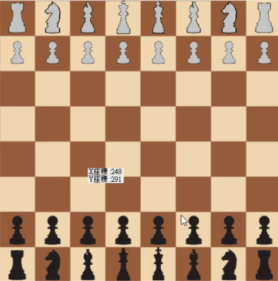
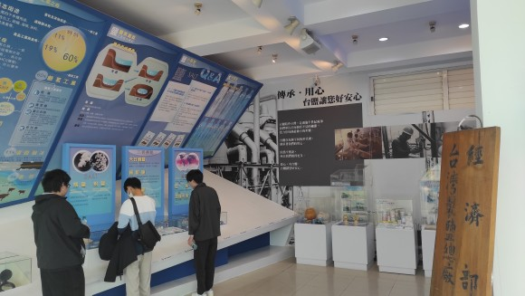
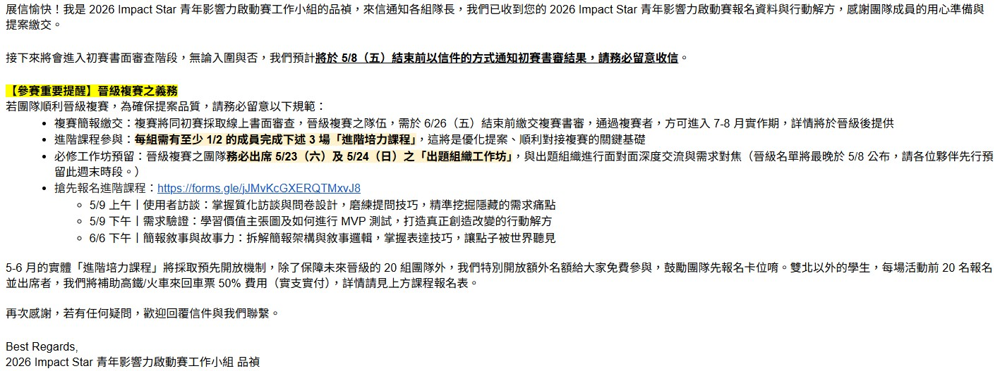

關於我
石易宸
資訊管理系學生
個人簡介
我是一位資管系學生，對設計理想的程式與專業能力抱有濃厚興趣。
學歷
高雄高級工業職業學校 資訊科畢業
現就讀於苗栗聯合大學 資訊管理系
興趣
製作遊戲程式
UI/程式設計
打羽球
室內攀岩
目標
希望能夠製作一款獨立遊戲。
聯絡資料
Email: ray007179@gmail.com
電話: 0912345678
專業技能
程式語言知識儲備
Python、C++、C#、SQL、HTML、CSS
開發工具經驗
VS Code、Android Studio、Unity(些微涉略)
專案作品



管系活動紀錄

台鹽通霄廠參訪
25年12/27時與參訪了台鹽通霄廠，了解一件成功的轉型所需要面臨的挑戰。

Innoserve
26年5/6時報名了innoserve競賽(未入圍
成長時間軸
高一階段
初次使用C++語言，對程式運算邏輯有了初步觀念，還記得都在做運算內容，例如:用*排列金字塔(正/顛倒,迴圈,遞迴函式等語法使用。
高二階段
學習C#語言，開始接觸物件程式設計的概念，設計使用UI，結合程式邏輯，製作出簡單的遊戲程式。
高三階段
備考，但是我自學了Unity引擎開發小遊戲
大一階段
回到了C#但是更加複雜了，從一開始專研一個語法邏輯，成長到能寫出一個完整的程式結構。初步學習到python語言更加易懂的語法，學到對小型專案開發經驗
大二階段
用C++學到了資料結構及演算法，理解前端html,css設計與後端SQL開發基本技術，在參與規模較大的專案有一定了解，並向製作團隊的大型專案前進
感觸
科技觀點
現在的我即將升上大三，我認為我很幸運生在AI快速發展的年代，學習成本降低，有容易接觸先進技術。
但同時我也為自身能力感到擔憂，以往程式可能要花數周時間才能完成，現在藉由AI幫助只需幾天就能完成專案。
我珍惜學習這些程式的過程，永遠記得當初為了消除BUG程式到處爬文的自己，這些都是我學習過程忘不了的回憶。